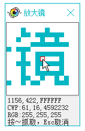

| 命令名称 | UI_Zoom 放大镜 |
| 命令功能 | 抓取屏幕坐标与颜色值（及窗口客户区坐标和RGB分量） |
| 语法格式 | ret = TURING.UI_Zoom() |
| 参数说明 | 无 |
| 返回值 | ret：字符串型，[x坐标,y坐标,16进制颜色值|窗口客户区x坐标,y坐标,句柄|R分量,G分量,B分量] |
| 按键精灵 |
复制代码
'放大镜：获取坐标颜色，～抓取，Alt+方向键微调，Esc取消 '结果：821,586,FF9933|237,265,199174|51,153,255 TracePrint TURING.UI_Zoom() |
| 界面效果 |  |